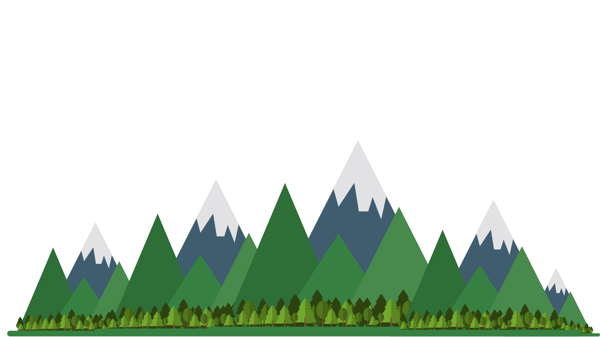
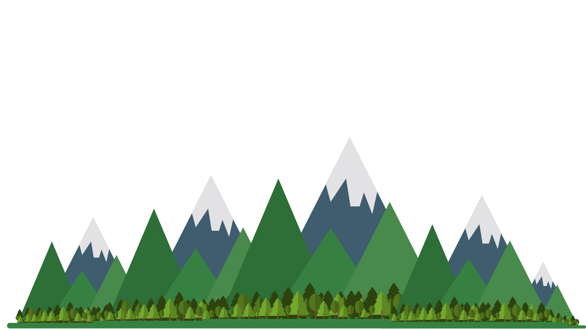

Daniel Murillo
software developer


I am a software developer and database administrator with a background in film and graphic design. I am passionate about solving issues through my wacky creative process while learning and developing my skills in computer science. My hunger for networking and information security lead me to receiving my COMPTIA A+ certification in 2020. I am confident in my foundation as a software developer and still contiune to learn and implement new technologies into my workflow as well as my everyday life.
I love to create and I have always enjoyed the process of solving a problem so why not combine those two loves with coding? And that is what I did! My journey initially started as a personal goal of mine to write my own programs that would streamline my work. I started with Python and SQL to get a solid foundation on object-oriented programming and database structure and theory, respectively. This lead me to web development and how I can implement my problem-solving skills with my create experience in design and UI/UX. I am now familiar with many development technologies and skills such as Python, SQL, HTML5, CSS, Bootstrap, JavaScript and Swift. Check out my GitHub to see some of my projects!

Having graduated from California State University, Fullerton in 2015 with a BA in Radio/TV/Film, I have implemented many of those acquired editing and design skills into my software development. My attention to aesthetics, user experience and knowledge of digital media has helped me overcome many software design barriers that would have otherwise slowed my process. Take a look at some of my work here!